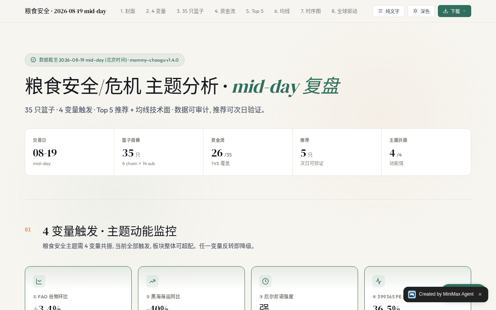

01
行情与证据
从 A 股 / 美股行情，到 K 线、资金流、板块、公告和业绩，把带时间戳的证据送进同一条流程。
来源与缺口可见
mommy-chaogu 是一套面向真实投研工作的本地优先工具箱：把行情、证据、策略卡和持续观察，按你的目标组合成能看懂、能修正、能复用的流程。
边界先行 不是券商、不是自动下单系统，也不把一次观察包装成收益保证。
每一步都说明“看到了什么”“怎么算的”“哪里还不能判断”。
从 A 股 / 美股行情，到 K 线、资金流、板块、公告和业绩，把带时间戳的证据送进同一条流程。
把文章、研报或个人方法整理成你能修改的卡片；事实、推断、人工判断和当前不可用逐项划线。
只把系统能准确表达的条件变成监测候选，给出范围、频率、来源和停止条件，不把一次查询伪装成后台任务。
说“今天怎么样”“分析半导体板块”“把这篇方法整理成策略卡”，让 Agent 先确认目标，再调用当前可用的能力。
mommy "主力资金在买什么"
连续对话、富卡片、股票联想、slash 命令和可中断的实时反馈。
mommy tui
行情、主题、持仓、信号、预测和 AI 对话，共享同一套服务层。
mommy web
接入 Claude Code、Kimi Code、Cline 或 Codex；默认从 market-only 开始。
mommy agent plan --host codex

不是一张静态海报，而是一组可以继续检查的交付物：报告、策略卡草稿、网页、纯文字版和原始数据。
样例用于研究 / 教学 / 个人投资参考，不构成投资建议；数据截至时间、覆盖范围和缺口均在包内保留。
market-watch-loop，按市场、主题、频率和停止条件组织盘中观察。加入美股与指数支持、确定性的美股市场简报、自定义工作流编译器，并把投研 Skill 随仓库分发。
一行安装、MCP 投研工具、外部 Coding Agent 接入、Web 配置向导和可回归的发布验证。
统一配置向导、微信本地频道、Web 对话主入口和单屏 TUI，把多个入口收敛到同一套服务层。
通用 A 股主题篮子分析：选篮子、拉资金流、跑 MA5/10/20/60、检查 4 个触发变量、产出 Top 5 与完整交付包。
mommy agent connect --host codex连接时与其他五个插件一起获取解释能力边界、展示连接计划、验证 MCP 与权限，然后把工具箱交给宿主 Agent 自由探索。
用带来源、时间戳和数据缺口的行情、板块、资金流与业绩证据完成研究。
把文章、研报或个人方法整理成可修订、可复用的 Strategy Card。
按市场、主题、标的、频率和停止条件组织有边界的盘中观察。
粮食安全 / 粮食危机主题的 35 只 A 股篮子分析；既随项目连接获取，也可独立下载检查。
这个页面不会在浏览器里假装“安装成功”。下载包后，用仓库内的标准库安装脚本校验压缩包、识别 Skill 名称并安全解压到目标宿主目录。
正在生成安装命令…--force。Plugins Store 是统一目录：六个插件都来自项目的 bundled catalog。运行 mommy agent plan/connect 会把它们并列安装；两个主题插件另外提供独立归档，方便离线检查、单独安装和版本对照。
从一句自然语言开始，再让工具和证据把它变成下一步。